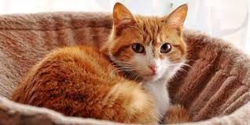
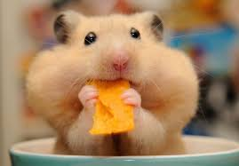
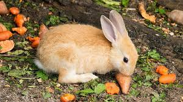
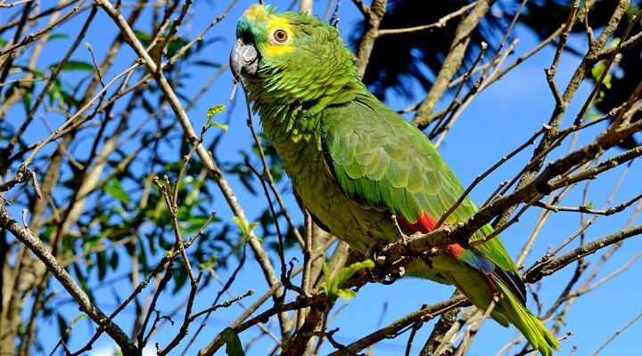

TOP 5 ANIMAIS DOMÉSTICOS
Vários estudos já mostraram o bem que um pet faz à saúde das pessoas.
Além disso, ter um animalzinho em casa resulta em passeios que estimulam os exercícios,
melhoram a pressão sanguínea e evita que o dono apresente indícios de depressão,
ansiedade ou estresse.
TOP 1 CACHORROS:

Todo mundo que vive com um cachorro sabe o quão fieis estes animais são e
que não existe nada como amor de cachorro. Um cachorro nunca nos abandona.
Ele está presente nos bons e nos maus momentos, nas horas de tristeza e alegria.
Sempre pronto para dar um passeio connosco e nos encher de lambidelas na cara.
Sem qualquer dúvida, um cachorro nos ajuda a demonstrar o melhor de nós próprios
e enche os nossos dias de alegria.
TOP 2 GATOS:
Gatos são animais fofos e carinhosos. Se o seu dia estiver ruim basta buscar vídeos
de gatinhos que seu coração se enche de alegria. Esses animais estão presentes no dia
a dia das pessoas. Alguns são mais reservados, outros mais carinhosos e alguns mais
irritados, mas todos são companheiros e ótimos amigos para as pessoas, principalmente
para aqueles que amam carinho e adoram o ronronar característico desses felinos.
TOP 3 HAMSTERS:
O hamster é um animal naturalmente limpo e fácil de se cuidar. Ele come pouco e é fácil
de encontrar nos pets shops. O mais importante de tudo: é um pet divertido e uma excelente
companhia.Os roedores são excelentes opções para quem busca economia, muito conforto
ao animal, além de ter um bichinho dócil, amoroso e fofo; os hamster são ótimos exemplos
e reúnem essas qualidades.
TOP 4 COELHOS:
Os coelhos são uma ótima opção para quem ama bichinhos de estimação fofos, mas não
tem muito tempo para cuidados ou espaço livre. Eles são pequenininhos e podem ficar em
apartamentos sem maiores problemas, além de não serem tão carentes ou difíceis de cuidar.
Brincalhões, fofos, carinhosos e amáveis, os coelhos precisam de atenção assim como
os outros animais.
TOP 5 PAPAGAIOS:
Há varios tipos de opções de aves para adotar, O desejo de muitos amantes de aves é ter um
papagaio em casa. Sua majestosa penugem, a personalidade divertida e a capacidade de
aprendizado são as principais características que conquistam os seres humanos. Contudo,
ser dono desse animal é uma enorme responsabilidade e um passo importante na vida.
Empresa competente, em busca de achar um lar melhor para nossos bixinhos.